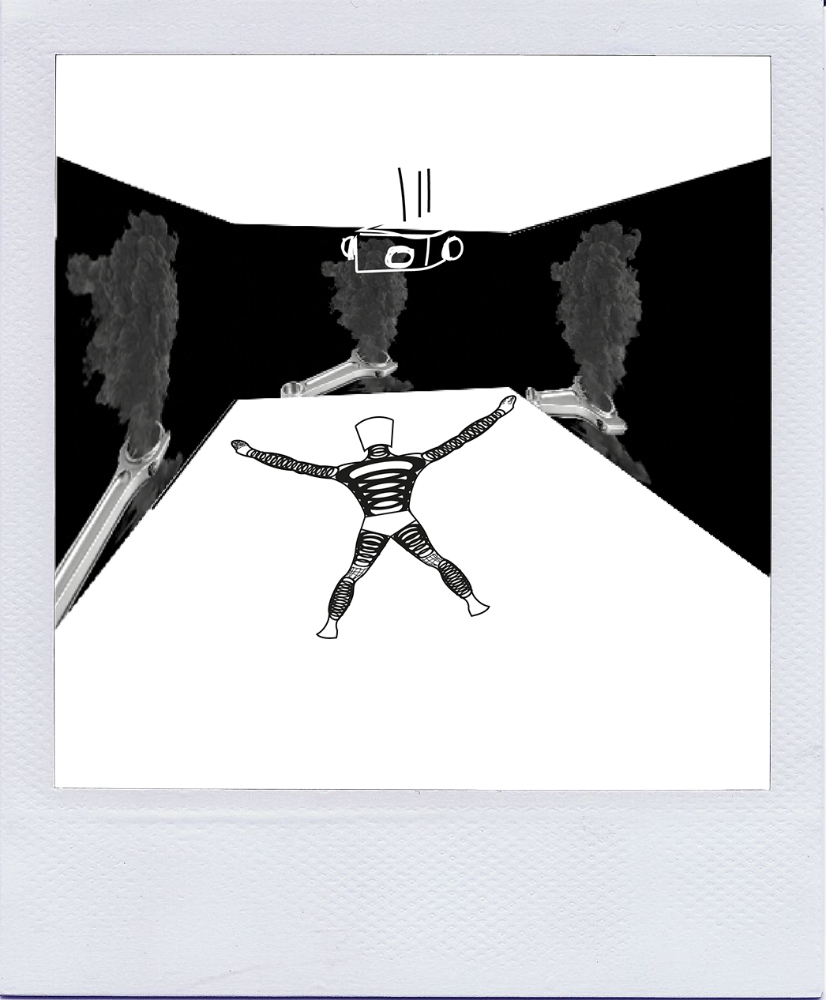
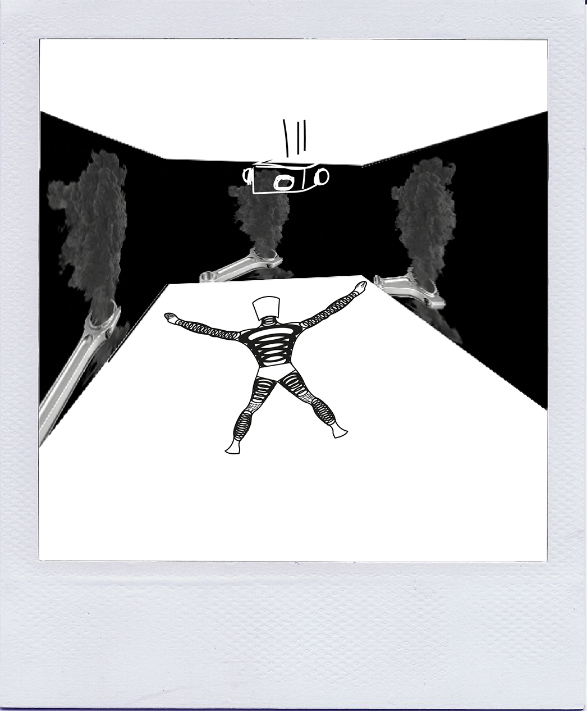

Conceito
O livro “A Ilustre Máquina de Ramires” de António Pocinho, apresenta-se sob o formato de 7 capítulos, preenchidos com legendas surrealistas de fotografias que não se encontram presentes fisicamente na obra. Tal deve-se ao facto de, alegadamente, António Pocinho encontrar uma máquina fotográfica na rua e começar a tirar fotografias com a mesma. Não tendo qualquer conhecimento de fotografia, não reparou que a máquina estava avariada e quando foi revelar as fotografias estas estavam todas pretas. Este foi então o nosso ponto de partida, esta relação do autor com a máquina. Um objeto que do ponto de vista lógico e racional deve ser substituído por um novo mas que, lutando contra todas as probabilidades levou a uma obra artística e ao sucesso de um autor. Pretendemos,com esta instalação explorar toda a esta componente de ciclo, de vida e morte, de ligação do mundo físico com o mundo digital e do quanto nos assemelhamos às máquinas que construímos. Para tal, dividimos a nossa instalação em 7 partes, 7 interações que representam por sua vez os 7 capítulos. Estas 7 interações fazem um ciclo perfeito de vida e morte.
Capítulo 1 — Crimes Céleres
Local — Cérebro
- —1 arduino
- —1 sensor de proximidade
- —4 projetores
- —1 computador
Material:
Interação:
Proximidade e projeção.
Sendo que se trata do início do cíclo, com recurso a um sensor de proximidade e com a ajuda de um arduino, à medida que o espectador se aproxima da figura, é projetado na quatro paredes, um vídeo curto de contextualização, com alusões imagéticas ao ciclo e ao propósito da exposição.
Capítulo 2 — Impressões Genitais
Local — Dedos da Mão Direita
- —Papel Térmico
Material:
Interação:
Toque
Esta parte contextualiza a interpessoalidade da máquina, na qual o espetador toca nos dedos e deixa a sua impressão digital, com a ajuda de papel químico.
Capítulo 3 — Retratos de Um Delirium Album
Local — Umbigo
- —Fitas de Leds
- —1 Arduino
- —Resistências
- —1 Botão
Material:
Interação:
Toque
Através de um botão localizado no umbigo, o espetador ativa a máquina que reage acendendo um conjunto de leds, percorrendo uma sequência do umbigo até à cabeça e simultaneamente do umbigo até aos pés, apagando-se pela ordem contrária à que se acendem (de dentro para fora e de fora para dentro).
Capítulo 4 — Story a Bordo de Um Crime
Local — Pés
- —1 Ecrã
- —1 Arduino
- —Ponteiros
- —1 Sensor Analógico de Movimento
Material:
Interação:
Toque
Utilizamos os dois pés, sendo que o da esquerda contém um ponteiro analógico e o direito um ponteiro digital. O analógico terá a parecença de uma bússola/astrolábio, baseando-nos nas estrelas e no sentido de navegação que acompanha todo o capítulo, enquanto que o da direita vai ter ponteiros digitais que fazem lembrar um relógio. À medida que o espetador mexe o ponteiro analógico, o ponteiro digital acompanha esse movimento, dando então a sensação de que está a operar a máquina. No entanto, quando deixa de manusear o ponteiro do lado esquerdo, ele volta ao mesmo sítio, verificando que não fez qualquer diferença/efeito no mecanismo em si.

Capítulo 5 — Fotos de Um Homem Morto
Local — Joelho Direito
- —Fotografias(polaroid)
Material:
Interação:
Visual,Toque
A perna do nosso protótipo encontra-se quebrada a meio, sendo que na zona joelho, que separa as duas partes, se encontram fotografias instantâneas de diferentes texturas. É possível o espetador retirar e analisar as mesmas e até mesmo compará-las com as diferentes texturas do protótipo.


Capítulo 6 — Álbum de Família de Afonso Colite
Local — Zona Genital
- —Acrílico
- —Telemóvel
Material:
Interação:
Realidade Aumentada (através do telemóvel)
A zona genital do nosso protótipo encontra-se coberta de acrílico transparente, deixando à imaginação de cada um o que poderá conter. Com a ajuda do telemóvel e de uns pós mágicos de realidade aumentada, o espetador pode descobrir uma animação relativa ao capítulo correspondente.
Capítulo 7 — Instantâneos
Local — Coração
- —1 motor (solenoid)
- —1 arduino
- —1 sensor de toque
Material:
Interação:
Visual,Toque
O espetador chega então ao fim do ciclo. Utilizando um sensor de toque
é despoletada a mesma projeção mas desta vez no sentido inverso e mais rápida.
Depois desta curta interação, o coração do protótipo começa a “bater” e a máquina a ganhar vida,
durante alguns instantes, apagando-se de seguida.
Voltámos ao ínicio do ciclo.
Espaço
— Sala - tamanho mínimo de 5x5 metros
— Identificador Numérico - 20x30 centímetros
— Escultura/Objeto - aproximadamente 1,50 metros
Referências
— Fritz Khan
Representação e explicação do corpo humano comparando-o com mecanismos.
— Jean Tinguely
Nouveau Réalisme, transforma materiais derivados do quotidiano humano e de desperdícios de consumo em obras de arte. Máquinas satíricas com funções diversas, absurdas e inúteis e por vezes auto-destrutivas.
— Niki de Saint Phalle
Nouveau Réalisme, em particular o trabalho Hon-En Katedral, uma escultura que representava o corpo da mulher do interior.

Mapeamento das Interações & Fluxo da Instalação
Ângulos — Perspetiva do Utilizador
 

Custos de Produção
Interação 1
— sensor de proximidade - 3 euros
custo total: 3 euros
Interação 2
— papel/plástico termosensível - 6 euros
custo total: 6 euros
Interação 3
— fitas de leds - 12 euros
custo total: 12 euros
Interação 4
— joystick analógico - 2 euros
— lcd 16x2 - 3 euros
custo total: 5 euros
Interação 5
— fotos polaroid - 5 euros
custo total: 5 euros
Interação 6
— acrílico - 3 euros
custo total: 3 euros
Interação 7
— selenoid - 0 euros
— transistor de potência - 0 euros
— diodo - 0 euros
— sensor de ultrasons - 0 euros
custo total: 0 euros
— Custo Total: 34 euros
Montagem
Créditos
— Guionista/Copy - Catarina Lucas Loureiro
— Direção de Arte - Ana Carina Correia
— Programador - Mário Abrantes
— Produtor Executivo - Ana Carina Correia & Catarina Lucas Loureiro